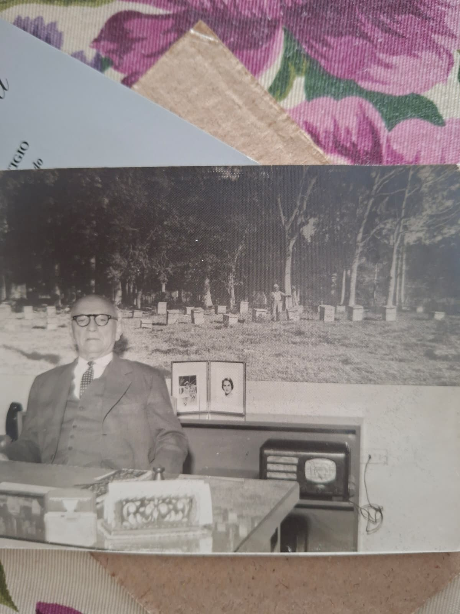

Bruselas · 17 de abril — 19 de octubre de 1958
El viaje
de la miel.
Desde Camagüey hasta la Exposición Universal: una fotografía de despacho, un gran mural y la historia de la miel y la cera cubanas.
Leoncio Benito y Compañía · Archivo familiar
La imagen que volvió a casa
La finca del apicultor Pacheco.
El gran mural del apiario que, según el recuerdo familiar, acompañó el stand cubano en Bruselas y después decoró el despacho de la firma.


Camagüey · Bruselas · Camagüey
Una imagen que hizo el viaje de vuelta.
La firma Leoncio Benito, dedicada a la cera y la miel de abejas, llevó sus productos a la Exposición Universal de Bruselas. El mural representaba el apiario de Pacheco, apicultor de Camagüey vinculado a la empresa.
El relato familiar recuerda el trabajo de selección, filtrado, conservación y análisis de la miel para llevarla a mercados europeos, así como la presencia de productos y artes cubanos en el pabellón nacional.

Una memoria familiar
La familia asocia la exposición con una medalla de oro para la miel y la cera cubanas. No se ha localizado un acta de premios que permita atribuir esa distinción a la firma.